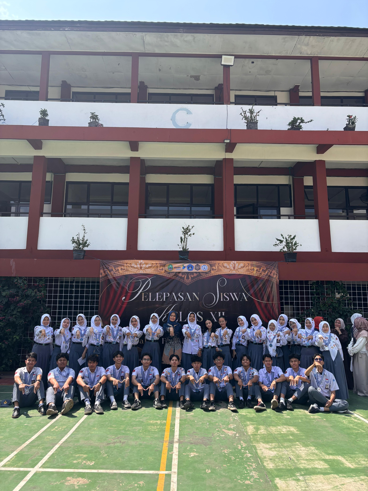

2024 — 2026
Selamat Datang
di Kenangan Kita
"Tempat di mana setiap sudutnya menyimpan cerita, dan setiap detiknya adalah bagian dari kita."
— PROLOG —
Kita tidak pernah sadar sedang membuat kenangan, sampai saatnya kita benar-benar merindukan hari-hari itu. Maka, izinkan halaman ini menjadi pengingat: bahwa dua tahun di kelas XII-9 bukan sekadar waktu—itu adalah rumah kedua yang kita pilih bersama.
CHAPTER I
Hari-hari Kelas
tertawa di sela pelajaran ✦
— TIMELINE —
Perjalanan Kita
scroll perlahan, ikuti garis waktu
— 36 WAJAH —
Mereka yang Membuatnya Bermakna
klik untuk melihat pesan dari mereka
CHAPTER II
Momen yang Kita Curi
klik foto untuk memperbesar
— GALERI KENANGAN —
Kepingan Lain
memori yang tak terlupakan
— PESAN & KESAN —
Yang Tidak Sempat Terucap
— BUKU TAMU —
Tinggalkan Pesanmu
tulis sesuatu untuk kita semua ·

— foto kelas, suatu hari yang tak akan terulang —
— EPILOG —
Kita berpisah,
tapi tidak pernah benar-benar.
Karena 2 tahun ini akan selalu hidup,
di setiap kali kita mengingatnya.
Untuk XII-9 — kelas yang tidak akan pernah saya lupakan.